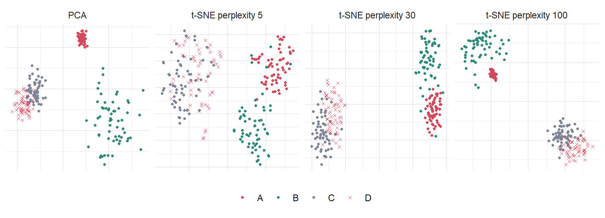

정보 있는 2차원만 쓰면 항상 0.95 안팎인데, 잡음 차원 100개를 붙이면 0.9625 → 0.5015
다수 class만 찍어도 0.6215인데 그보다 못합니다. 이웃이 사실상 무작위가 되었기 때문입니다
✅ kNN(과 모든 거리 기반 방법)을 쓰기 전에 차원 축소 또는 feature 선택이 필요한 이유입니다. 7절에서 “어떤 차원이 중요한가”를 거리 자체에 학습시킵니다
3. Embedding 🗺️ [보강 — 원자료에 제목만 있음]
Embedding = 고차원 점 \(\mathbf{x}_i \in \mathbb{R}^d\) 를 저차원 점 \(\mathbf{z}_i \in \mathbb{R}^{d'}\) (\(d' \ll d\))로 옮기되, 무언가를 보존하는 것. 방법마다 보존하려는 것이 다르고, 그것이 곧 그 방법의 성격입니다.
방법
보존하려는 것
선형?
절
PCA
분산 (= 전역 Euclidean 구조)
선형
4
LDA
class 간 분리
선형, 지도
4
Kernel PCA
kernel 공간의 분산
비선형
5
MDS
쌍별 거리
선형(classical)
6
Isomap
측지(geodesic) 거리
비선형
6
LLE
이웃으로 자기를 재구성하는 가중치
비선형
6
t-SNE / UMAP
이웃 확률 / 이웃 그래프
비선형
8
NMF
비음수 부분의 합
선형, 비음수
9
✅ “어떤 방법이 더 좋은가”가 아니라 “무엇을 보존하고 싶은가”를 먼저 정하세요.
4. PCA (Principal Component Analysis) 📐
1) 개요
데이터의 변동(variability)을 가장 잘 설명하는 방향을 차례로 찾습니다
2~3차원으로 줄여 시각화, 잡음이 많은 뒤쪽 성분을 버려 잡음 제거, 뒤이은 분석의 전처리(W12의 군집화)
원자료 표현 정정 — “가장 중요한 feature 몇 개만 선택”
PCA는 기존 feature 중 몇 개를 고르는(selection) 방법이 아닙니다. 모든 feature의 선형결합으로 새 축을 만드는(extraction) 방법입니다. PC1에는 모든 유전자가 조금씩(loading만큼) 들어 있습니다. feature를 실제로 고르고 싶다면 W6의 Lasso 같은 방법이 맞습니다.
2) 과정 (원자료 ①~⑧)
데이터의 중심(각 feature의 평균)을 구하고 ② 원점으로 옮깁니다 — 상대 위치는 그대로
표준화는 아무 도움이 안 됩니다 (0.8025 → 0.8010) — 모든 차원이 원래 같은 스케일이니까요
label로 학습한 Fisher 가중 거리는 0.9180, 정보 차원만 아는 oracle(0.9220)에 거의 도달합니다
정보 차원의 Fisher 점수 평균 2.191 vs 잡음 차원 최대 0.088 — 학습된 거리가 잡음 차원을 스스로 꺼 버린 것입니다
⚠️ label을 쓰는 방법이므로 가중치 학습은 training fold 안에서만 (W2의 leakage)
8. t-SNE와 UMAP 🎨 [신규]
단일세포 논문의 거의 모든 그림입니다. 그리고 가장 많이 오독되는 그림이기도 합니다.
1) t-SNE
고차원에서 점 \(i\) 가 \(j\) 를 이웃으로 고를 확률 — Gaussian, 폭 \(\sigma_i\) 는 perplexity(유효 이웃 수)에 맞춰 점마다 따로 정함 \[p_{j|i} = \frac{\exp(-\|\mathbf{x}_i - \mathbf{x}_j\|^2 / 2\sigma_i^2)}{\sum_{k\ne i}\exp(-\|\mathbf{x}_i - \mathbf{x}_k\|^2 / 2\sigma_i^2)}, \qquad p_{ij} = \frac{p_{j|i} + p_{i|j}}{2n}\]
td <-do.call(rbind, lapply(names(embt), function(m)data.frame(a = embt[[m]][, 1], b = embt[[m]][, 2], cluster = yt, m = m)))td$m <-factor(td$m, levels =names(embt))ggplot(td, aes(a, b, colour = cluster, shape = cluster)) +geom_point(size = .9) +facet_wrap(~ m, nrow =1, scales ="free") +scale_colour_manual(values =c(A ="#d1495b", B ="#2e8b7a", C ="#7d8597", D ="#d1495b")) +scale_shape_manual(values =c(A =16, B =16, C =16, D =4)) +labs(x =NULL, y =NULL, colour =NULL, shape =NULL) +theme_minimal() +theme(axis.text =element_blank(), legend.position ="bottom")

국소 이웃 보존(10-NN 중 유지된 비율) — t-SNE(perplexity 30) 0.390 > PCA 0.211. t-SNE가 잘하는 일입니다
전체 거리 보존 — PCA 0.882 > t-SNE 0.464~0.752. 전역 구조는 PCA가 낫습니다
⚠️ 군집 크기는 거짓말입니다. 실제로 B가 A보다 5.06배 넓게 퍼져 있는데, perplexity 30의 t-SNE에서는 1.56배. t-SNE는 밀도를 평준화합니다
⚠️ 군집 간 거리도 거짓말입니다. 실제로 A는 B와 C에서 거의 같은 거리(평균 대비 0.91 vs 0.92)인데, perplexity 30의 t-SNE에서는 B 바로 옆(0.27), C는 멀리(1.45) 놓입니다. 그림만 보면 “A와 B는 가까운 아형”이라고 읽게 됩니다. PCA는 0.91 / 0.92를 그대로 지킵니다
perplexity를 100으로 올리면 크기 비(5.77)와 거리 상관(0.752)이 일부 돌아오지만, A–B(0.35) vs A–C(1.09)의 왜곡은 남습니다. perplexity는 국소–전역 저울의 손잡이이지 해결책이 아닙니다